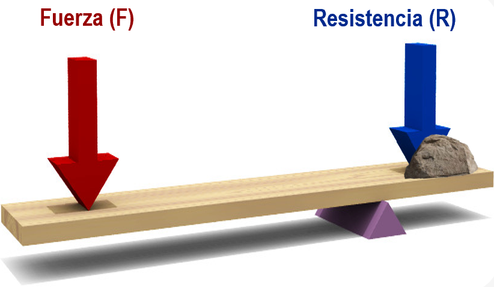
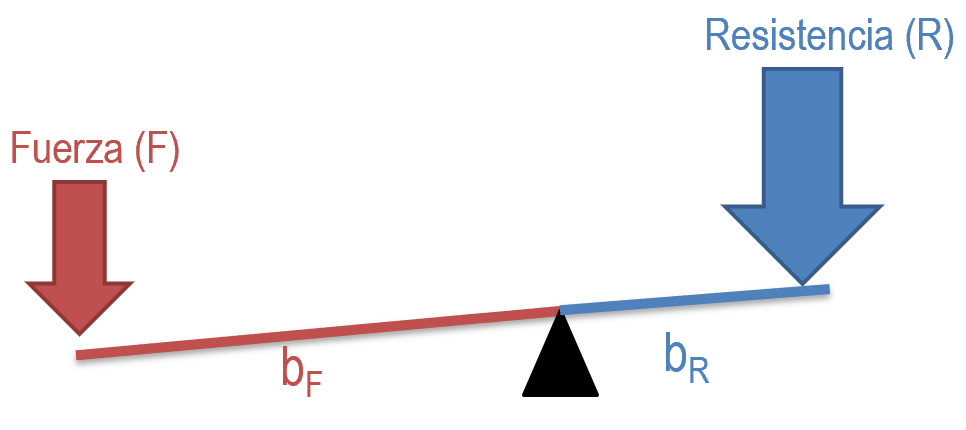
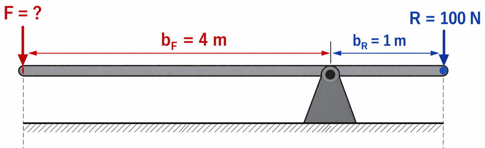
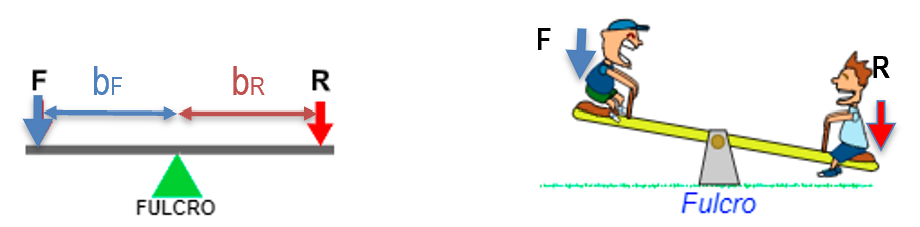
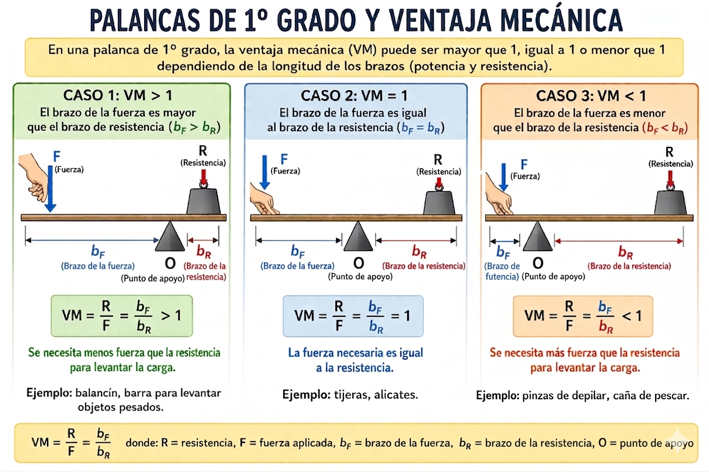
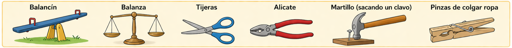
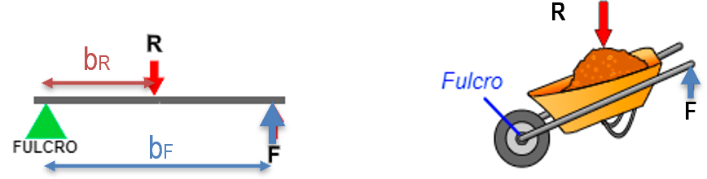
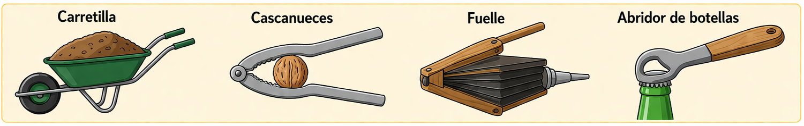
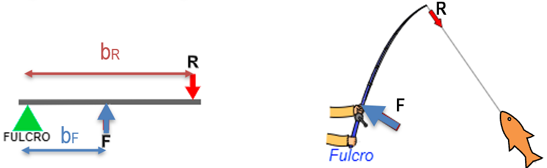
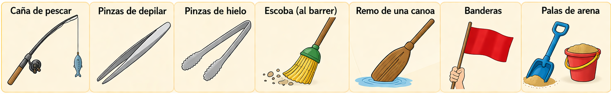

7.1. PALANCAS
Las palancas son objetos rígidos que giran entorno un punto de apoyo o fulcro (O). En un punto de la barra se aplica una potencia o fuerza (F) con el fin de vencer una resistencia (R). Al realizar un movimiento lineal de bajada en un extremo de la palanca, el otro extremo experimenta un movimiento lineal de subida. Por tanto, la palanca nos sirve para transmitir fuerza o movimiento lineal.
7.1.1. Ley de la Palanca

La palanca se encuentra en equilibrio cuando el producto de la fuerza (F), por su distancia al punto de apoyo (d) es igual al producto de la resistencia (R) por su distancia al punto de apoyo (r). Esta es la denominada Ley de la palanca, que matemáticamente se expresa como: (1)
donde:
- F : Fuerza, es la Fuerza que hay que realizar para elevar la fuerza de Resistencia. Se expresa en Newton (N).

-
bF : Brazo de la fuerza, es la distancia desde el punto donde se ejerce la fuerza al punto de apoyo (fulcro). Se expresa en metros (m).
-
R : Resistencia, es la fuerza que queremos vencer o elevar. Se expresa en Newton (N).
-
bR : Brazo de la resistencia, es la distancia desde el punto donde se encuentra la resistencia a vencer al punto de apoyo (fulcro). Se expresa en metros (m)
En el caso de que necesites calcular (despejar) la \(F\) necesaria para elevar una \(R\) dada: (2)
Ejemplo
Supongamos una palanca con las siguientes características:

- Carga o Resistencia: \(R = 100 \, \text{N}\)
- Brazo de resistencia: \(b_R = 1 \, \text{m}\)
- Brazo de fuerza: \(b_F = 4 \, \text{m}\)
La Fuerza aplicada necesaria sería:
✅ Gracias a la palanca, aplicando solo 25 N podemos levantar una carga de 100 N.
Tip: Cuanto más largo sea el brazo de fuerza \(b_F\) en comparación con el brazo de resistencia \(b_R\), menos esfuerzo necesitaremos para mover la carga.
7.1.2. Ventaja Mecánica (VM)
Las palancas son máquinas simples que nos permiten multiplicar la fuerza que aplicamos para mover una carga.
Definición de VM
La ventaja mecánica (VM) de una palanca es la relación entre la Resistencia que queremos elevar y la Fuerza que se aplica.
Nos dice cuántas veces es más grande (o pequeña) \(R\) con respecto a \(F\).
Procedimiento para su cálculo:
Partiendo de la Ley de la Palanca, colocamos las dos fuerzas (F y R) a un lado de la igualdad, mientras que las dos distancias o brazos (bF y bR) al otro lado. Hay que respetar las normas matemáticas, a la hora de mover las magnitudes.
Partiendo de esta ley, podemos separar las fuerzas y los brazos respetando las normas matemáticas:
A cualquiera de estas igualdades se le conoce como Ventaja Mecánica (VM):
Podemos calcular la VM de dos maneras:
Interpretación:
- VM > 1 → la palanca multiplica la fuerza, menos esfuerzo para mover la carga.
- VM = 1 → solo cambia la dirección de la fuerza.
- VM < 1 → se necesita más fuerza para elevar cierta resistencia.
7.1.3. Tipos de palancas
Hay tres tipos (géneros o grados) de palanca según se sitúen la fuerza, la resistencia y el punto de apoyo:
-
1º Grado (o género).
-
2º Grado (o género).
-
3º Grado (o género).
- 1º grado o género
Palancas de 1º grado
El fulcro (O) se encuentra entre la fuerza aplicada (F) y la resistencia (R).

Las palancas de 1º grado son las únicas en las que la VM puede tomar los tres valores respecto al 1:

| Situación (1º Grado) | Ventaja Mecánica (VM) | Relación de Brazos | Fuerza a aplicar (\(F\)) | Ejemplo típico |
|---|---|---|---|---|
| O cerca de la Carga | Mayor que 1 (VM > 1) | \(b_F > b_R\) (Brazo fuerza largo) | Menor que la resistencia (\(R\)) | Sacar un clavo, balancín |
| O en el centro | Igual a 1 (VM = 1) | \(b_F = b_R\) (Brazos iguales) | Igual a la resistencia (\(R\)) | Balanza de platillos |
| O cerca de la Fuerza | Menor que 1 (VM < 1) | \(b_F < b_R\) (Brazo fuerza corto) | Mayor que la resistencia (\(R\)) | Tijeras de papel largas |
Ejemplos: Balancín, balanza, tijeras, alicate, martillo (al sacar un clavo), pinzas de colgar ropa….

- 2º grado o género
Palancas de 2º grado
La resistencia (R) se encuentra entre la fuerza aplicada (F) y el fulcro (O).

¡Importante!: En las palancas de 2º grado SIEMPRE se cumple:
| Tipo de Palanca | Ventaja Mecánica (VM) | Relación de Brazos | Fuerza a aplicar (\(F\)) | Esfuerzo necesario |
|---|---|---|---|---|
| 2º Grado | Siempre mayor que 1 (VM > 1). Tiene Ventaja Mecánica. |
El brazo de fuerza (\(b_F\)) es siempre mayor que el brazo de resistencia (\(b_R\)) | Siempre menor que la resistencia (\(R\)) a vencer | Menor fuerza para mover la carga |
Ejemplos: Carretilla, cascanueces, fuelle, abridor de botellas...

- 3º grado o género
Palancas de 3º grado
La fuerza a aplicar (F) se encuentra entre la resistencia a vencer (R) y el fulcro (O).

¡Importante!: En las palancas de 3º grado SIEMPRE se cumple:
| Tipo de Palanca | Ventaja Mecánica (VM) | Relación de Brazos | Fuerza a aplicar (\(F\)) | Esfuerzo necesario |
|---|---|---|---|---|
| 3º Grado | Siempre menor que 1 (VM < 1). Se dice que no tiene Ventaja Mecánica (VM) |
El brazo de fuerza (\(b_F\)) es siempre menor que el brazo de resistencia (\(b_R\)) | Siempre mayor que la resistencia (\(R\)) a vencer | Mayor fuerza para mover la carga |
Ejemplos: caña de pescar, pinzas de depilar, pinzas de hielo, escoba (al barrer), remo de una canoa, banderas, palas de arena..
